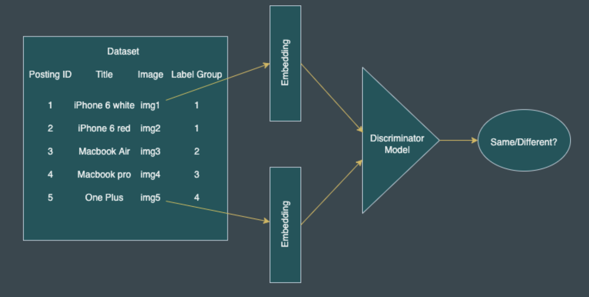

{% block project %}
<div class="col s12 m10 ">
  <div class="card ">
      <span class="card-title deep-orange-text fa-regular left">Product Deduplication</span>
      <div class="card horizontal right valign-wrapper">
        <div class="card-image">
          
        </div>
        <div class="card-stacked">
          <div class="card-content">
              <p class="blue-grey-text fa-thin">
                E-commerce websites have products that are sold by multiple sellers. Each seller can upload different images and descriptions of the same product. 
                These images and descriptions can be highly diverse. Identifying these duplicates is essential to improve user experience as well as to optimize resources. 
                The goal of this projectis to identify duplicated products among ~33k products sold by multiple sellers on Shopee. 
                <br><br> 
                As the dataset has more than ~11k distinct class labels of products,multiclass classification model wasn’t feasible. The solution implemneted is based on finding similar products(deduplication) by different approach of vector embeddings of products.
                To achieve this, Transfer Learning was implemented in which images were initially converted to embeddings using pretrained model like VGG-11 and Resnet. A model was then trained on these embeddings to classify them as same or different
              </p>
          </div>
          <div class="card-action">
            <a href="https://github.com/rachiteagles/product-deduplication">Show More</a>
          </div>
        </div>
      </div>
    </div>
</div>
{% endblock %}